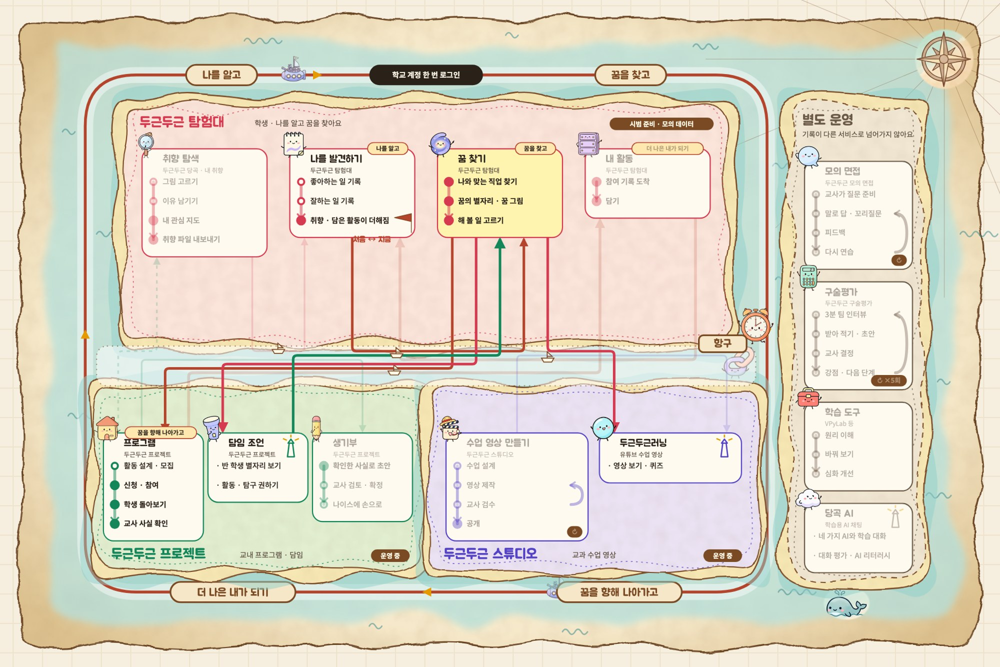
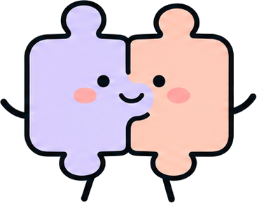
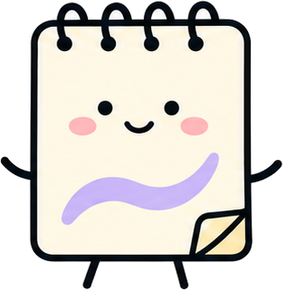
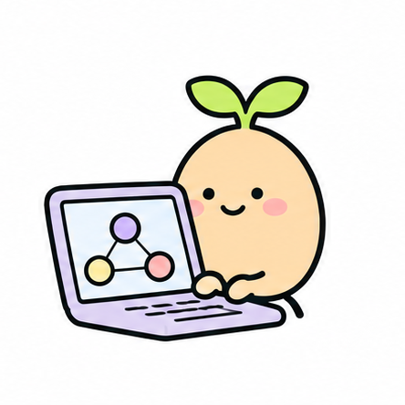
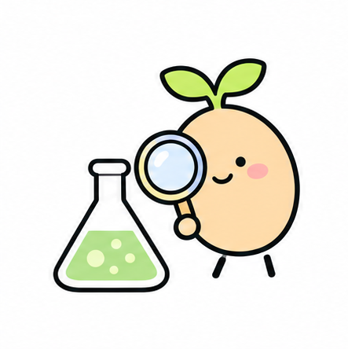
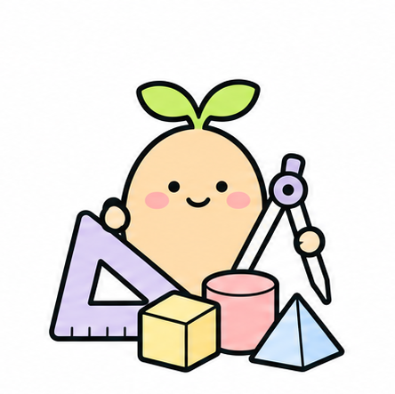
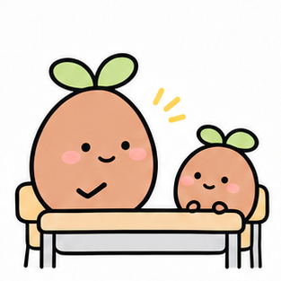
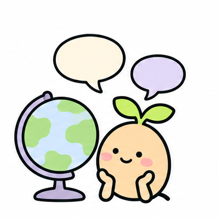
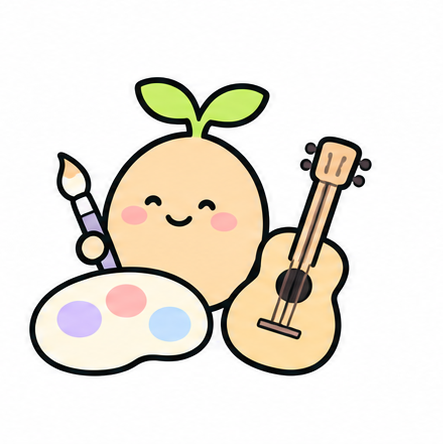
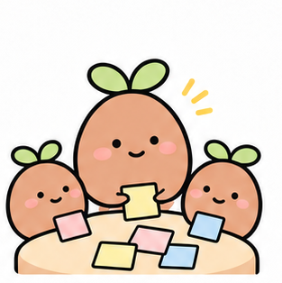

학교에서 자주 듣는 네 가지 고민
좋아하고 잘하는 것이
무엇인지도 모르겠고
어떤 진로를 선택해야 할지
어떤 활동에 참여하는 게
좋은지도 모르겠어요.
무엇인지도 모르겠고
어떤 진로를 선택해야 할지
어떤 활동에 참여하는 게
좋은지도 모르겠어요.

학생
학기 초엔 아이들
성향 파악도 어려운데
진로 지도는 더 어렵네요.
특히 내성적인
아이들을 만나면…
성향 파악도 어려운데
진로 지도는 더 어렵네요.
특히 내성적인
아이들을 만나면…
담임 선생님
프로그램은 많이 개설하는데,
학생들은 맨날
오는 아이들만 오고…
행정 업무는 또
왜 이리 많은지…
학생들은 맨날
오는 아이들만 오고…
행정 업무는 또
왜 이리 많은지…
프로그램 담당
수업 결손이 많은 아이들에게
일일이 수업을
해 줄 수도 없고,
그렇다고
그냥 둘 수도 없고…
일일이 수업을
해 줄 수도 없고,
그렇다고
그냥 둘 수도 없고…
교과 교사
핵심
나와 꿈을 발견하고, 꿈을 이루도록 돕고, 쉽고 재미있는 수업 영상까지 직접 제작
두근두근 탐험대
학생나와 꿈 발견
좋아하는 일 · 잘하는 일 → 나와 맞는 직업 → 꿈의 별자리 → 해 볼 일→학생이 고른
꿈 · 해 볼 일←확인된
참여 기록
꿈 · 해 볼 일←확인된
참여 기록
두근두근 프로젝트
프로그램 담당 교사꿈을 이루도록 지원
꿈에 닿는 프로그램을 설계 · 운영 · 개선: 계획서 → 설계 → 출석 · 관찰 → 생기부 초안 → 후기로 내년 계획 고치기→학생이
궁금해한 개념
궁금해한 개념
두근두근 스튜디오
교과 교사쉽고 재미있는 수업 영상 직접 제작
선생님 기획 → AI 초안 · 그림 · 목소리 → 선생님 검수 → 두근두근러닝 공개학생 · 서윤(모의 학생)의 데이터 흐름★
좋아하고 잘하는 것에서 직업 · 별자리 · 학교 교육활동까지
1
좋아하고 잘하는 것 입력
♥ 친구 글 맞춤법·어색한 문장 고쳐 주기♥ 문학 시간 소설 구절 필사해 보기♥ 학급 신문에 선생님 인터뷰 기사 쓰기★ 긴 지문 읽고 세 줄로 요약하기★ 영상 자막에서 틀린 맞춤법 찾아내기
활동지에 쓴 장면을 그대로 입력
2
숫자로 바꾸기
♥
♥
♥
★
★
장면의 뜻을 숫자로 바꿔 서로 비교 가능
3
어울리는 직업 찾기
직업 923개 가운데
1. 편집자
0.78🇰🇷 커리어넷 출판편집자
2. 작가 · 카피라이터
0.77
3. 영어영문학 교수
0.77
Love는 Love끼리 · Well은 Well끼리 비교해 추천
4
경험 · 배움의 별자리
편집자가 되기 위한 경험과 배움을 별로
5
우리 학교 교육활동과 연결
📚 교육과정(2026 편제표)문학과 영상 · 2학년 2학기
🏫 학교 프로그램나도 작가 글쓰기인문사회 주제탐구아침 독서(책.함.성.)
🎓 관련 학과(커리어넷)국어국문학과 · 111개 대학미디어출판과 · 3개 대학
이번 학기 들을 과목 · 참여할 프로그램
↺ 참여한 프로그램이 다시 ①의 기록이 되고, 별자리에 새로운 별 · 한 학기 한 바퀴

1
두근두근 탐험대
나와 꿈 발견
학생학생 · 두근두근 탐험대 · 나와 꿈 발견하기★
나와 꿈을 발견하는 한 학기의 흐름
1Love & Well
좋아하는 일 · 잘하는 일을 적고 옮겨 적기

2To Be
마인드맵에 직업을 쓰고, 없으면 AI가 추천
3꿈의 별자리
고른 직업까지 가는 길과 이번 학기 할 일
4Happy Dream
꿈 직업을 가운데 둔 꿈 보드
5해 볼 일 실천
몇 가지를 골라 해 보고 내 활동에 담기
학생 · ① Love & Well★
좋아하는 일 · 잘하는 일을 적어 디지털 기록으로
지금 운영 중인 것
수업과 평가에서 이미 사용 중
두근두근 프로젝트운영 중
교내 프로그램의 설계 · 모집 · 참여 확인 · 생기부 정리를 한 앱에서
두근두근 스튜디오운영 중
선생님이 AI와 수업 영상을 만들고 직접 검수해 두근두근러닝으로 공개
두근두근 탐험대2027 시범
모의 학생 28명으로 전 과정 확인

구술평가운영 중
『데이터 과학』 2개 반 23팀, 팀당 3분 인터뷰 다섯 번. AI 조교 초안을 선생님이 골라 피드백
모의 면접운영 중
이름 · 학번을 가린 생기부로 선생님이 질문을 정하고, 학생은 말로 답하며 연습
VPyLab · 당곡 AI운영 중
코드를 바꿔 보며 원리를 익히는 학습 도구, AI와 학습 대화를 하며 AI 리터러시를 기르는 채팅
일정
2027학년도, 당곡고에서 탐험대를 시범 운영합니다
2026 지금모의 학생으로 전 과정 확인
Love & Well부터 새 별까지 전 과정을 모의 학생 28명으로 확인
시범 전에보안 · 학교 절차 · 동의
서버 디스크 암호화 · 외부 백업과 복구 시험 · 학습지원 소프트웨어 확인 · 학교운영위원회 심의 · 학생 동의서
2027학년도당곡고 시범 운영
진로 수업의 Love & Well에서 시작해 프로젝트 · 스튜디오와 이어서 운영
그 뒤결과 보고와 나눔
결과 · 오류 · 운영 시간 보고, 연구회 · 연수로 다른 학교와 공유
모의 학생 28명으로 확인한 숫자
28기록 저장
→28교내 AI 계산
→19프로그램 신청
→15참여
→12담기 · 새 별
실제 학생이 아닌 모의 학생 자료로 확인한 숫자
시범에서 측정할 것
- 학생이 고른 직업의 근거를 스스로 설명하는지
- ‘내 활동 담기’를 스스로 쓰는지
- 선생님이 쓰는 시간 · AI 초안을 고친 비율
- 보안 사고 0건
AI를 잘 가르치는 AI 중점학교를 넘어,
나와 꿈을 발견하고 이루는 학교로







